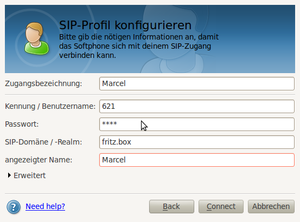
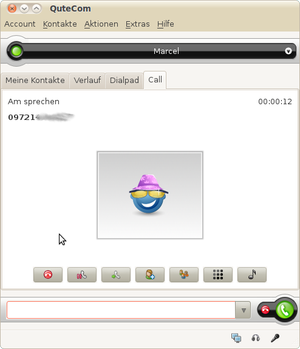

Qutecom
Dieser Artikel wurde für die folgenden Ubuntu-Versionen getestet:
Ubuntu 16.04 Xenial Xerus
Ubuntu 14.04 Trusty Tahr
Zum Verständnis dieses Artikels sind folgende Seiten hilfreich:
QuteCom  (früher Wengophone oder Openwengo) ist ein plattformunabhängiges Programm für Internet-Telefonie auf Basis der Grafikbibliothek Qt, das den offenen SIP-Standard umsetzt. Kostenloses Telefonieren inklusive des Führens von Videkonferenzen über das Internet mit IP-Telefonen oder SIP-kompatibler Software ist möglich. Firewalls sind keine Hürde für Qutecom, da der TCP-Port 80 (HTTP) zur Kommunikation genutzt wird. Im Gegensatz zu Skype handelt es sich um freie und quelloffene Software.
(früher Wengophone oder Openwengo) ist ein plattformunabhängiges Programm für Internet-Telefonie auf Basis der Grafikbibliothek Qt, das den offenen SIP-Standard umsetzt. Kostenloses Telefonieren inklusive des Führens von Videkonferenzen über das Internet mit IP-Telefonen oder SIP-kompatibler Software ist möglich. Firewalls sind keine Hürde für Qutecom, da der TCP-Port 80 (HTTP) zur Kommunikation genutzt wird. Im Gegensatz zu Skype handelt es sich um freie und quelloffene Software.
Aufgrund des Ausstiegs der unterstützenden Firma Wengo wurde ein neuer Name gesucht und mit QuteCom gefunden.
Installation¶
Folgendes Paket muss installiert [1] werden:
qutecom (universe, nur bis Ubuntu 16.04)
 mit apturl
mit apturl
Paketliste zum Kopieren:
sudo apt-get install qutecom
sudo aptitude install qutecom
Konfiguration¶
 Das Programm findet sich bei Ubuntu-Varianten mit einem Anwendungsmenü unter "Internet -> QuteCom" [2].
Konto einrichten¶
Beim ersten Start wird man aufgefordert, seine Daten, die man bei der Registrierung bei einem SIP-Provider erhalten hat, einzugeben.
Ton einstellen¶
Unter "Extras -> Einstellungen -> Audio" findet sich drei Einstellungsmöglichkeiten für:
Aufnahmegerät
Wiedergabegerät
Rufsignalisierung
Darunter gibt es einen Knopf "Testanruf", der nicht mehr funktioniert.
Webcam einrichten¶
Unter "Extras -> Einstellungen" findet sich unter Video ein Kästchen "Video aktivieren". Erst wenn man das aktiviert hat, kann man in der darunter liegenden leeren Schaltfläche die Auswahlliste ausklappen und die (gefundene) Kamera auswählen. Ein Testbild erscheint dann automatisch. Praktisch ist die Möglichkeit, die Videoqualität der Geschwindigkeit der Internetverbindung anpassen zu können.
Eine Übersicht, wie man Hardware für Videotelefonate korrekt einrichtet, findet sich im Artikel Webcam. Falls im Webcam-Testbild unter Einstellungen nur ein grünes Bild erscheint, so muss QuteCom mittels des folgenden Befehls mit dem alten v4l-Treibers gestartet werden [3]:
LD_PRELOAD=/usr/lib/libv4l/v4l1compat.so qutecom
Zur Vereinfachung des Aufrufs kann man ein kleines Shell-Skript mit obigem Befehl erstellen. Siehe auch V4L2-Kompatibilität.
Benutzung¶

Über Fritz!Box telefonieren¶
Man muss einfach nur ein neues IP-Telefon in der FRITZ!Box einrichten, dessen Daten man dann in QuteCom eingibt und es so in der Fritz!Box registriert.
Verschlüsselung¶
Unter "Extras -> Einstellungen -> Sicherheitseinstellungen" kann man eine Verschlüsselung seiner Anrufe mit Hilfe der AES 128-Bit Verschlüsselung aktivieren, sofern die Gegenseite dies auch aktiviert hat.
Instant Messaging¶
Mit Qutecom ist es auch möglich, etwa über ICQ, MSN oder Googletalk zu chatten.
Problembehebung¶
Qutecom und Pidgin¶
Anscheinend startet das Programm nicht richtig, wenn Pidgin noch aktiv ist. Qutecom erscheint dann nicht, ist in der Systemsteuerung jedoch als "schlafend" zu finden. Die umgekehrte Reihenfolge: erst Qutecom, dann Pidgin, scheint zu funktionieren.
Mikrofon ist zu leise¶
In dem Fall einfach den Lautstärke-Regler öffnen (Rechtsklick auf das Lautsprecher im Panel) und den Schalter "Mic Boost (+20db)" mit einem Haken versehen.
 Übersichtsartikel
Übersichtsartikel- Erstellt mit Inyoka
-
 2004 – 2017 ubuntuusers.de • Einige Rechte vorbehalten
2004 – 2017 ubuntuusers.de • Einige Rechte vorbehalten
Lizenz • Kontakt • Datenschutz • Impressum • Serverstatus -
Serverhousing gespendet von